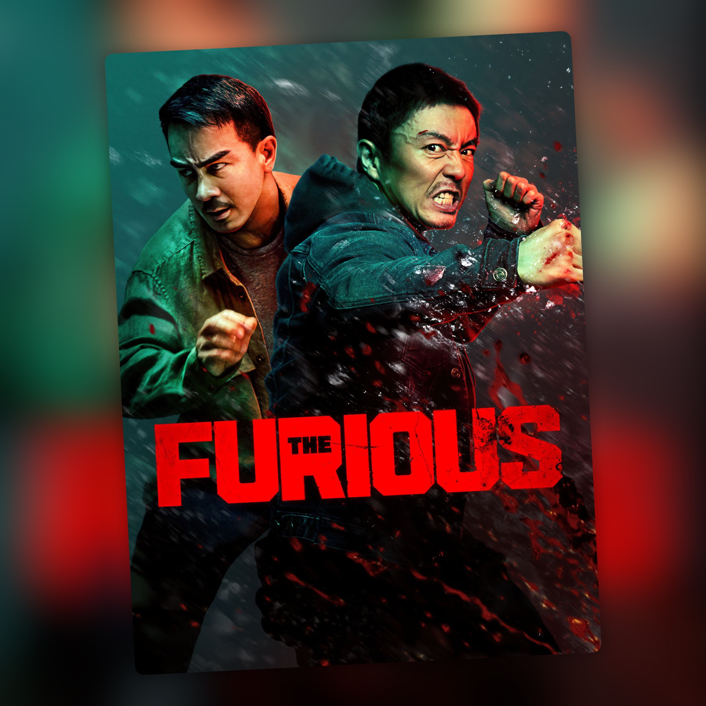

The Furious
Ostias bien coreografiadas para fans de The Raid

The Furious me ha encantado. A los fans de The Raid y The Raid 2, y en general a los que disfrutan de las películas de ostias y de las coreografías de lucha increíbles, les va a volver locos.
Y tiene sentido que sea así, porque parte del reparto viene directamente de ese universo. Joe Taslim y Yayan Ruhian, dos habituales de las películas de Gareth Evans, están aquí metidos hasta el cuello. Kenji Tanigaki, el director, viene del mundo de la coreografía de acción y se nota en la forma de rodar las escenas. Los combates duran lo suficiente para disfrutar de lo que hacen los actores y no están llenos de cortes que te impidan seguir lo que está pasando.
Xie Miao es Wang Wei, un padre al que le secuestran a su hija y que decide ir a buscarla por su cuenta. Además, el personaje es mudo, así que buena parte de lo que sabemos de él lo vemos en sus acciones. Quiere encontrar a su hija y va a por quien haga falta para conseguirlo.
La historia es la típica excusa de venganza: una red de tráfico de menores secuestra a su hija y la policía, que además está metida en el ajo, no va a hacer nada por ayudarle. Por el camino se cruza con Navin, un periodista que está buscando a su propia mujer desaparecida, y los dos acaban uniendo fuerzas contra la misma organización. No hay ninguna sorpresa en el planteamiento, pero tampoco hace falta. La película sabe perfectamente a lo que viene y no pierde demasiado tiempo en otras cosas.
Y luego empieza el desfile de personajes. Joe Taslim, Yayan Ruhian, Jeeja Yanin y Brian Le van apareciendo por el camino y todos tienen su momento. El combate final a varias bandas es la guinda, con todos ellos juntos y la película soltando el freno del todo.
Es una película pensada para verla con público, gritando con cada golpe. Si te van The Raid, Ip Man o ese tipo de cine de acción físico y sin trampas, esta es de las tuyas.
Ficha técnica
- Dirigida por: Kenji Tanigaki
- Guion: Mak Tin-shu, Lei Zhilong, Shum Kwan-sin, Frank Hui
- Reparto principal: Xie Miao, Joe Taslim, Yang Enyou, Jeeja Yanin, Yayan Ruhian, Brian Le
- Año: 2025
- Duración: 113 min
- Dónde verla: Filmin; próximamente en Movistar Plus+